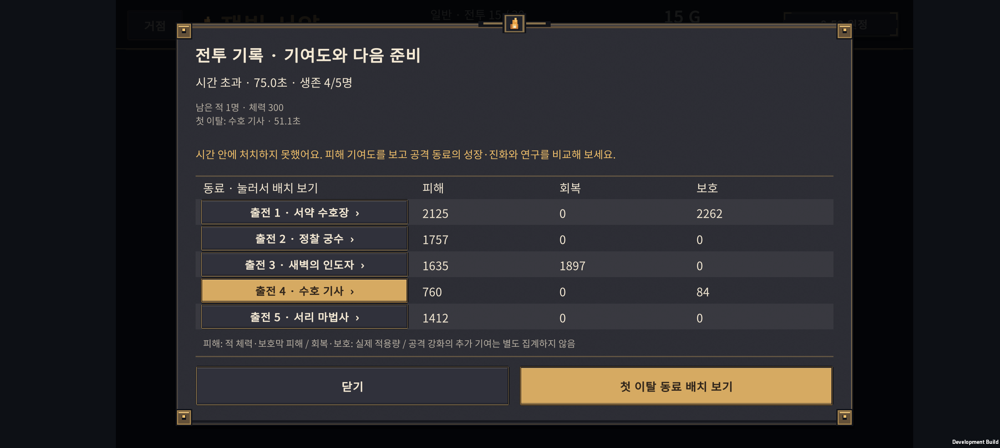
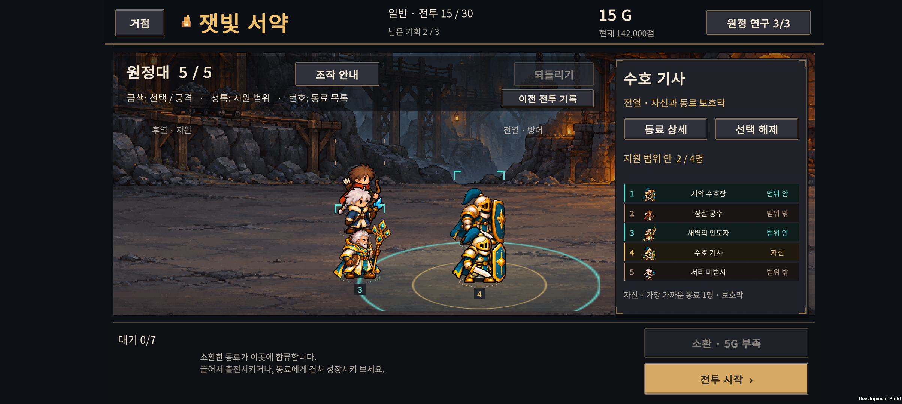
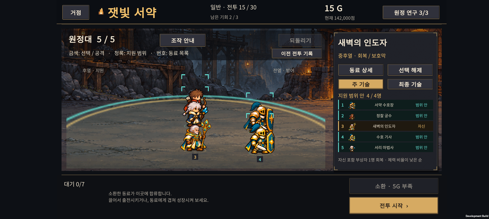

v0.68 · 후반 난이도 비교와 패배 후 재도전 연결
2026-11-01 · IGNIS: ASHEN OATH
전투 기록의 동료를 눌러 준비 화면에서 바로 선택할 수 있게 했다. 후반은 정상 원정 336회와 별도 동일 투자량 비교로 점검했다. 24·29전투의 압박 완화, 25전투 정원 보스의 시간 제한 부담을 다음 조정 후보로 확인했다. 이번 버전에서 적·유닛·연구 수치와 보상은 변경하지 않았다.
패배 기록에서 실제 준비로
- 패배 결과에서 전투 기록을 연다.
- 동료 이름을 누르면 같은 전투의 준비 화면으로 이동하고 해당 동료를 선택한다. 첫 이탈 동료 배치 보기 버튼으로도 이동할 수 있다.
- 전장에서 선택 표시·공격/지원 범위를 보고 위치를 옮기거나, 오른쪽 동료 상세에서 성장·진화 정보를 확인한다. 성장은 기존 재료와 골드를 사용하는 조작을 그대로 따른다.
- 준비 화면의 이전 전투 기록으로 돌아가 다른 동료도 비교할 수 있다. 결과에서 일반 같은 전투 재도전 버튼을 먼저 눌러도 기록을 다시 열 수 있다.
같은 직업이 두 명 있어도 실제 유닛 ID로 연결한다. 기록에서 선택하거나 다시 읽는 것은 골드·남은 기회·난수 상태·배치·성장을 바꾸지 않으며 전투를 자동 시작하지 않는다. 이미 결과 처리 때 소모한 기회를 다시 차감하지 않는다.
전투 기록은 이번 앱 실행 중 데이터다. 앱 재실행 뒤 상세 기록이 없거나, 새 원정/새 전투로 넘어갔거나, 남은 기회를 소진했으면 잘못된 재도전 연결을 제공하지 않는다. 재도전 준비 중 재료로 소비되었거나 출전에서 뺀 동료는 이전 기록에서 바로 선택할 수 없다.



후반 비교의 범위
| 구분 | 규모 | 목적 |
|---|---|---|
| 정상 규칙 새 원정 | 336회 · 실제 진행 전투 6,253회 | 실제 소환·성장·결합·연구 지출과 남은 기회를 사용해 어디까지 가는지 확인 |
| 정상 도달 편성의 격리 재전투 | 3,938회 · 기준 편성 1,004개 | 동일 편성으로 이전/다음 적 편성 또는 밀집/분산 배치만 비교 |
| 동일 투자량 편성 비교 | 10,692회 | 결합 6종·결합 없는 공격형 3종 × 동료 구성 3종 × 투자량 3단계 × 연구 6경로 × 배치 2종 × 20–30전투 |
정상 원정은 시작 편성 4종 × 운용 정책 7종 × 연구 경로 3종 × 성장 우선순위 2종 × 시드 2개다. 68101–68102를 사용했고 65/336개 조건이 완주했다. 같은 시드를 여러 정책이 공유하고 후반 도달 편성은 초중반을 통과한 집단이다. 이 숫자를 일반 플레이어의 승률이나 완주 확률로 해석하면 안 된다.
동일 투자량 비교는 출전 5명, 소환 재료 23/27/35개, 연구 140G를 맞췄다. 결합형은 최종 진화형보다 재료가 1개 적게 들어 그 차이를 전열 기사의 군기 특성 전수에 사용했다. 원하는 동료를 얻기까지의 무작위 소환 비용이나 남는 대기석 재료까지 같다는 뜻은 아니다. 선택한 진화 분기와 두 배치만 비교했으며 최적 빌드 탐색은 아니다.
처음 탐색한 7,128회 비교는 낮은 투자량만 포함했고 결합의 남는 재료를 당장 능력이 오르지 않는 성장치에 사용했다. 그 결과는 위 최종 집계에서 제외하고, 실효성 있는 특성 전수와 충분한 투자 단계를 포함한 비교로 대체했다.
20–30전투: 순서에 따른 압박
아래는 매 전투에 동일한 972개 조건을 적용한 통제 비교다. 투자량 세 단계를 섞은 결과이므로 실제로 그 전투에 도달하는 사람의 난이도와는 다르다. 평균 잔여 체력은 전멸한 동료의 0%를 포함한 5명 평균이다.
| 전투 | 유형 | 승리 / 972 | 시간 초과 | 평균 잔여 체력 |
|---|---|---|---|---|
| 20 | 서리 보스 | 346 | 41 | 22.9% |
| 21 | 정원 일반 | 972 | 0 | 92.6% |
| 22 | 정원 일반 | 946 | 0 | 76.7% |
| 23 | 정원 일반 | 601 | 0 | 40.9% |
| 24 | 정원 정예 | 722 | 2 | 55.7% |
| 25 | 정원 보스 | 197 | 134 | 11.4% |
| 26 | 왕궁 일반 | 972 | 0 | 87.5% |
| 27 | 왕궁 일반 | 850 | 0 | 65.2% |
| 28 | 왕궁 일반 | 416 | 0 | 29.6% |
| 29 | 왕궁 정예 | 511 | 4 | 39.6% |
| 30 | 마지막 용 | 262 | 65 | 20.8% |
21·26전투의 완화는 보스 직후 새 지역의 첫 전투라는 역할을 고려해야 한다. 매 전투가 앞 전투보다 무조건 더 어려워야 하는 것은 아니다. 반면 보스를 앞둔 정예전인 24·29전투가 직전 일반전보다 느슨해지는 부분은 우선 조정할 가치가 있다.
- 23 → 24: 동일 972조건에서 패배→승리 173개, 승리→패배 52개. 평균 잔여 체력도 14.7%p 늘었다.
- 28 → 29: 패배→승리 114개, 승리→패배 19개. 평균 잔여 체력 10.1%p 증가.
- 편성 정의를 보면 일반전의 전열 3 + 원거리 3에서 정예전은 정예 1 + 전열 2 + 원거리 2로 바뀐다. 원거리 한 명이 줄면서 지속 압박이 낮아지는 것이 원인 후보다. 아직 이 요소 하나만 바꾼 인과 비교는 하지 않았으므로 단독 원인으로 확정하지 않는다.
정상 도달 편성에서도 체력 기준의 완화가 보였다. 24전투 도달 편성 94개를 그대로 23전투와 비교하면 평균 잔여 체력이 60.8% → 77.2%, 29전투 도달 편성 80개를 28전투와 비교하면 43.6% → 64.1%였다. 다만 승리 수는 각각 94→92, 80→74로 줄어든다. 평균적으로 여유가 늘어도 일부 편성에는 정예가 더 위험하다. 따라서 모든 결과를 한 방향의 단순 난이도 상승/하락으로 요약하지 않는다.
25전투: 정원 보스의 시간 제한 부담
충분한 투자 단계인 재료 35개 조건 324개만 보면:
| 같은 편성·투자량 | 승리 / 324 | 시간 초과 | 평균 잔여 체력 |
|---|---|---|---|
| 25 정원 보스 | 175 | 57 | 25.2% |
| 30 마지막 용 | 254 | 14 | 51.6% |
정원 보스가 마지막 보스보다 항상 강하다는 뜻은 아니다. 이 조합·연구·배치 표본에서는 정원이 더 강한 화력·생존 검사를 요구했다. 정상 진행에서는 해당 구간에 도달한 편성이 이미 강해서 25전투 첫 시도 85/94승·시간 초과 0회였다. 두 결과의 차이는 도달 집단과 투자 선택의 차이이며 모순이 아니다.
다음에는 정원 보스의 체력·지원 적·회복/보호 상호작용 중 하나씩 바꿔 시간 초과가 줄어드는지 확인해야 한다. 첫 비교만 보고 보스 전체를 일괄 약화하거나 제한 시간을 늘리지 않았다.
특정 결합이나 연구만 정답인가
현재 표본에서 유일한 필수 결합·연구 경로는 확인되지 않았다. 투자 단계에 따른 편향은 크다.
재료 27개 조건의 마지막 용은 성가 기수 중심 편성에서만 8/36개 승리가 있었고 다른 8개 중심 편성은 0/36이었다. 재료 23개는 전부 패배했다. 낮은 투자량만 검사했다면 성가 기수가 필수라는 잘못된 결론을 내릴 수 있었다.
재료 35개, 연구 140G 조건에서는 결합 없는 최종 진화 편성을 포함해 전부 승리 사례가 나왔다. 아래 각 행은 동료 구성 3종 × 연구 6경로 × 배치 2종, 36조건이다.
| 중심 동료 | 25전투 승리 / 36 | 30전투 승리 / 36 | 30전투 시간 초과 |
|---|---|---|---|
| 황혼 명사수 · F-AR | 18 | 29 | 0 |
| 잿불 대마법사 · F-FI | 18 | 28 | 0 |
| 서리 감시자 · F-IC | 12 | 24 | 0 |
| 잿불 검위 · H-01 | 24 | 32 | 0 |
| 광휘 성기사 · H-02 | 24 | 36 | 0 |
| 빙결 추적자 · H-03 | 13 | 25 | 2 |
| 융해술사 · H-04 | 18 | 24 | 2 |
| 성가 기수 · H-05 | 30 | 26 | 10 |
| 원정 유격대장 · H-06 | 18 | 30 | 0 |
성가 기수는 낮은 투자에서 생존을 받쳐 주지만, 충분히 투자한 마지막 용에서는 시간 초과가 10조건 있었다. 광휘 성기사의 36/36 결과 역시 이 표본의 강점이며 전체 상황에서 무조건 최적이라는 증거는 아니다. 보스마다 유리한 역할이 달라지는 점은 살린다.
재료 35개 조건의 여섯 연구 경로는 마지막 용에서 각각 38–45/54조건을 이겼다. 하나의 경로만 승리하는 구조는 아니었다. 지금 검사한 것은 방어/정밀/비전 두 단계와 다른 계열 첫 단계를 섞은 동일 비용 경로다. 모든 노드와 혼합 경로의 우열을 검증한 것은 아니다.
적용 범위와 검증
- 전투 수치, 골드, 보상, 소환·결합·연구 규칙은 그대로 normal-067 / Rules 6 / Run Save 14다. 기존 점수와 진행 원정의 규칙도 바꾸지 않았다.
- 전투 기록 Core 검사 17개 통과. 같은 직업 둘 중 실제 첫 이탈 ID를 확인하는 검사를 포함한다.
- Unity 재도전 흐름 51개 검사 통과, Android 빌드 성공. 같은 전투 유지, 자원·난수·되돌리기 상태 보존, 중복 선택, 일반 재도전 버튼 경유, 없는 동료·승리·기회 소진·이전 원정 기록 차단을 확인했다.
- Buddy2 화면과 실제 터치 확인 결과는 실기기 검증에 기록한다. 초기 확인에서 재도전 문구와 기존 범위 설명이 겹친 부분은 한 줄 설명과 별도 기록 버튼으로 정리했다.
커뮤니티 공개 준비
레딧 게시 방향·게시처 조건·영문 초안을 함께 작성했다. 첫 영상의 구성, r/IndieDev 소개 글, 무료 테스트 모집 글, 국내 커뮤니티 소개와 예상 댓글 답변을 담았다. AI 사용·현재 한국어 UI·개발 중인 상태를 사실대로 설명한다. 실제 글은 게시하지 않았다.
다음 조정 순서
- 24·29전투: 원거리 한 명 추가 또는 정예 압박 보완을 서로 별도 후보로 비교한다. 직전 일반전보다 긴장감이 늘면서 취약한 편성이 갑자기 전멸하지 않는지 본다.
- 25전투: 시간 초과 57조건을 피해·회복·보호 기여도로 나눠, 보스 체력이나 특정 상호작용 하나만 조정하는 후보를 시험한다. 마지막 용과 충분한 투자량에서 다시 비교한다.
- 외부 첫 플레이: 짧은 전투 소개 영상을 준비한 뒤, 읽을 수 있는 언어의 테스트 빌드로 “패배 후 무엇을 바꿀지 이해했는가”를 실제 사람에게 확인한다. 자동 전투 수만 늘리는 것으로 조작 이해도 검증을 대신하지 않는다.